O Agenda TakeUp é a plataforma da Laferlins para o controle operacional de contratos de algodão, incluindo o acompanhamento de análises de HVI e do processo de TakeUp (retirada/aprovação de fardos), geração de relatórios profissionais e gestão de equipe.
| Módulo | Para que serve |
|---|---|
| Agenda Operacional | Painel inicial com indicadores, gráfico de toneladas aprovadas e compromissos do dia. |
| Contratos | Cadastro e acompanhamento de contratos, com progresso de TakeUp e saldo pendente. |
| Análises | Registro de análises de HVI e TakeUp por contrato/parcela, em assistente de 3 etapas. |
| Relatórios | Geração de relatórios com IA, exportação em Excel (.xlsx) e Word (.docx) e construtor visual. |
| Histórico | Trilha de auditoria de todas as ações realizadas no sistema. |
| Usuários | Criação e gestão de usuários e perfis (exclusivo para administradores). |
Cada usuário recebe um perfil que define o que ele pode fazer no sistema:
| Perfil | Permissões |
|---|---|
| Administrador | Acesso total. Cria, edita e exclui usuários, redefine senhas e acessa todos os módulos. |
| Consultor | Registra contratos, análises e relatórios. Não gerencia usuários. |
| Leitura | Apenas visualiza dados e relatórios, sem permissão para editar. |
Acesse takeup-agenda.vercel.app, informe o e-mail e a senha e clique em Entrar.
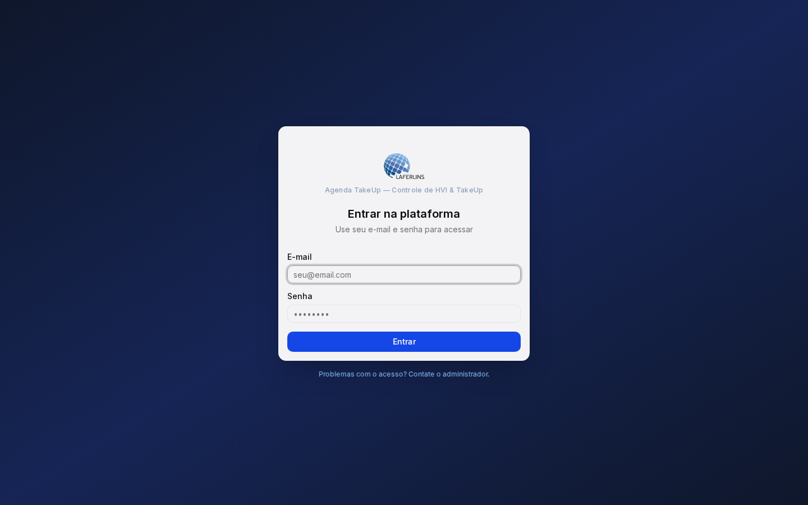
Usuários criados pelo administrador recebem uma senha provisória. No primeiro acesso, o sistema obriga a definição de uma senha pessoal: digite a nova senha duas vezes e clique em Alterar senha e continuar.
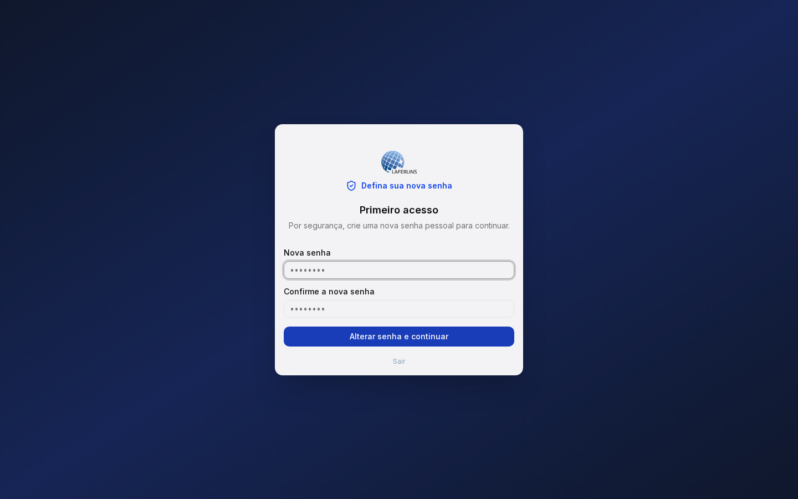
É a primeira tela após o login. Reúne os principais indicadores e os compromissos do dia.
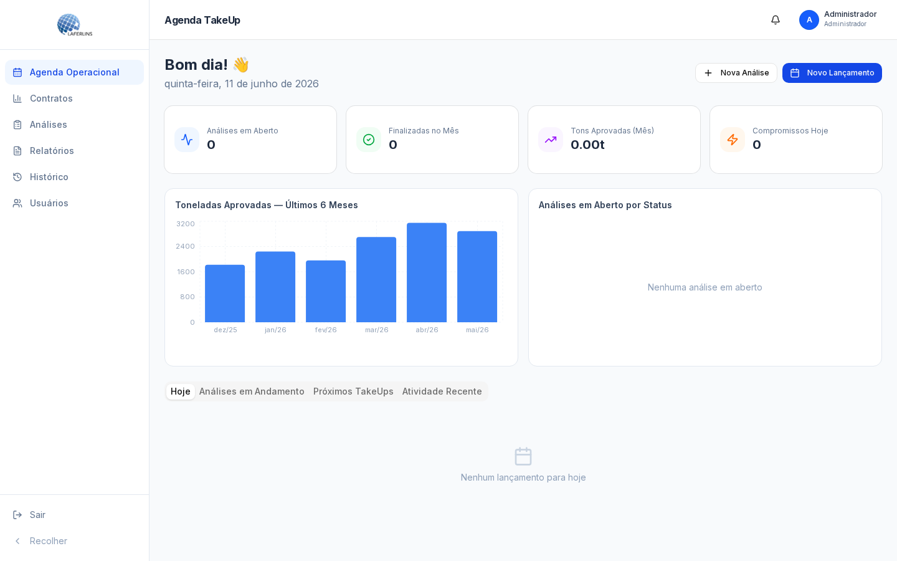
Os botões Nova Análise e Novo Lançamento (canto superior direito) dão acesso rápido às ações mais comuns.
Em Novo Lançamento, registre um evento na agenda operacional: título, tipo, data, horário e descrição, podendo vinculá-lo a uma análise e/ou contrato.
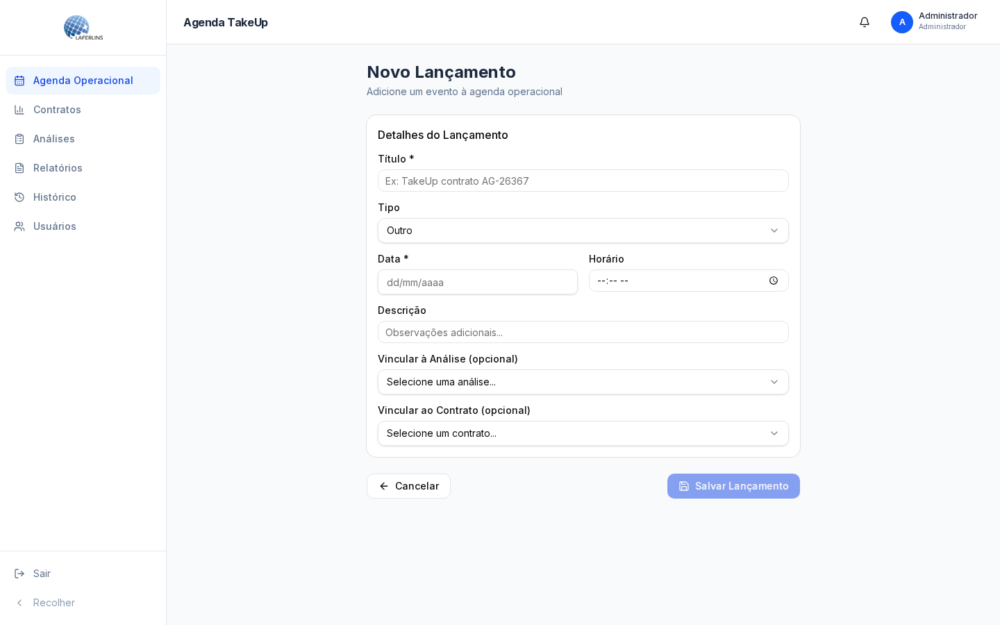
Lista todos os contratos ativos, com indicadores de total contratado, TakeUp realizado e saldo pendente, além de uma barra de progresso global.
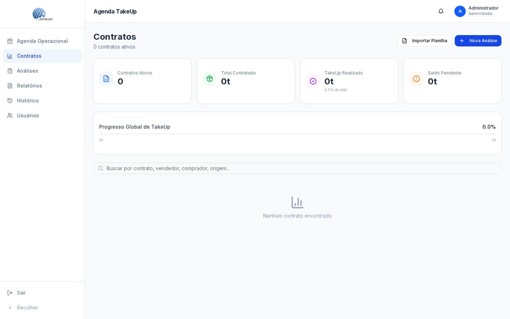
Em Importar Planilha, é possível colar dados diretamente do Excel. Copie o cabeçalho + as linhas desejadas (Ctrl+C), cole na área indicada (Ctrl+V) e clique em Analisar Dados para conferir antes de confirmar.
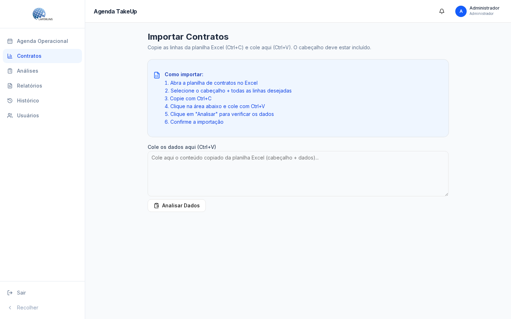
Centraliza o histórico de análises. É possível buscar por contrato, produtor, comprador ou cidade e filtrar por status.
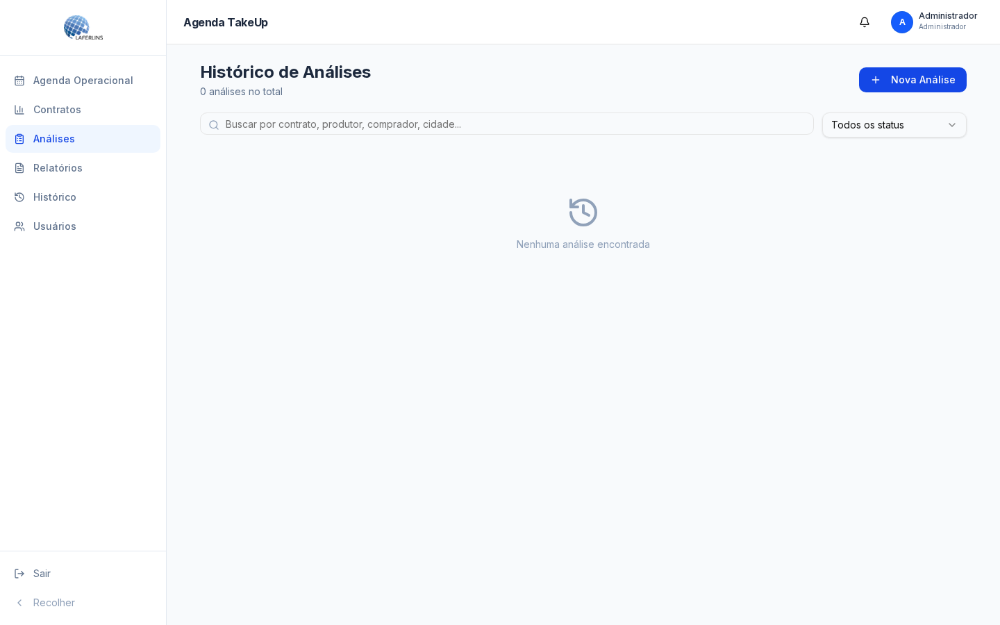
O cadastro de análise é guiado em três etapas:
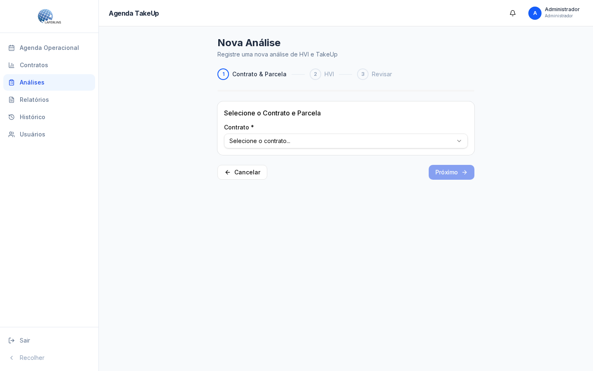
Lista os relatórios já gerados e dá acesso às ferramentas de criação. É possível buscar, filtrar por contrato e exibir relatórios inativos.
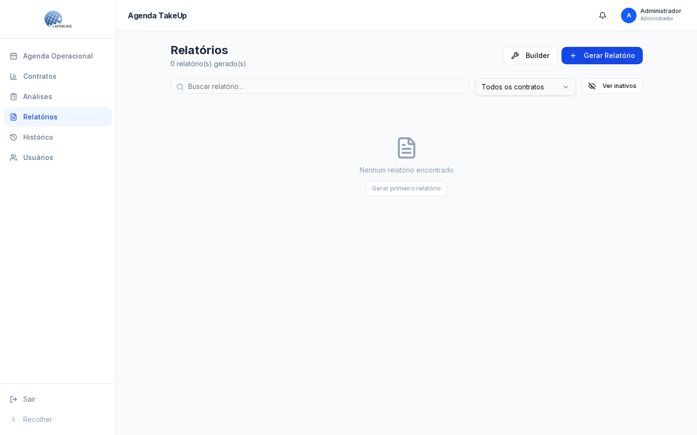
Escolha o tipo de relatório (Contrato, Análise, Conjunto de Análises ou Personalizado), informe o título, selecione o contrato e, se quiser, adicione uma instrução para orientar o foco do relatório. A IA já recebe o contexto completo do sistema.
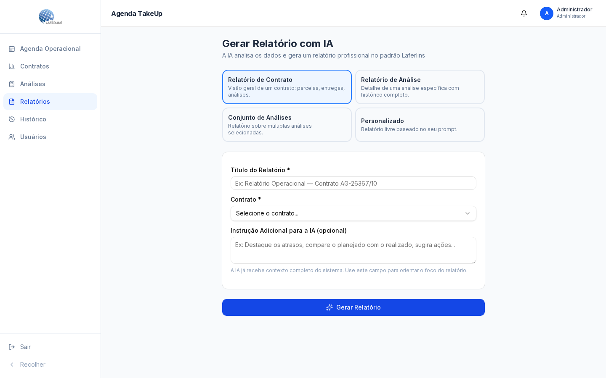
O Builder permite montar a estrutura do relatório seção por seção: definir título, subtítulo, rodapé, orientação (retrato/paisagem), agrupamento, ordenação e os campos exibidos. Ao final, exporte em Excel (.xlsx) ou gere em Word (.docx). Estruturas podem ser salvas como template para reutilização.
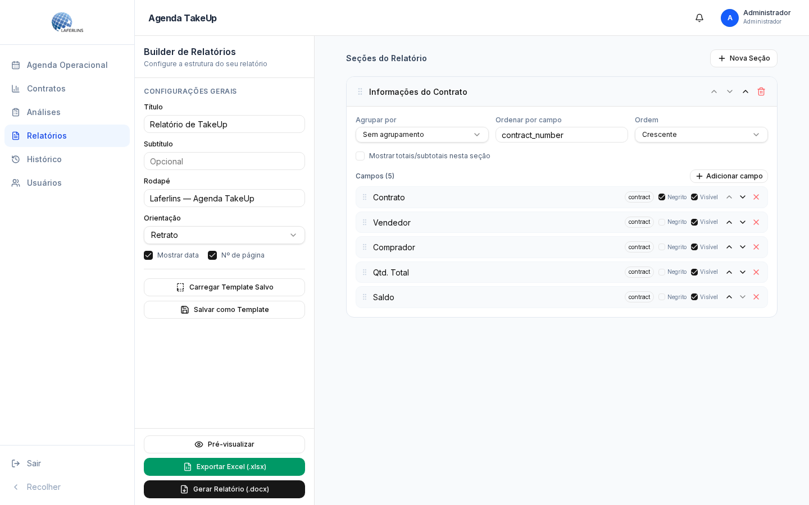
Trilha de auditoria de tudo o que acontece no sistema. Filtre por entidade, tipo de ação, contrato e período, e exporte o resultado em PDF.
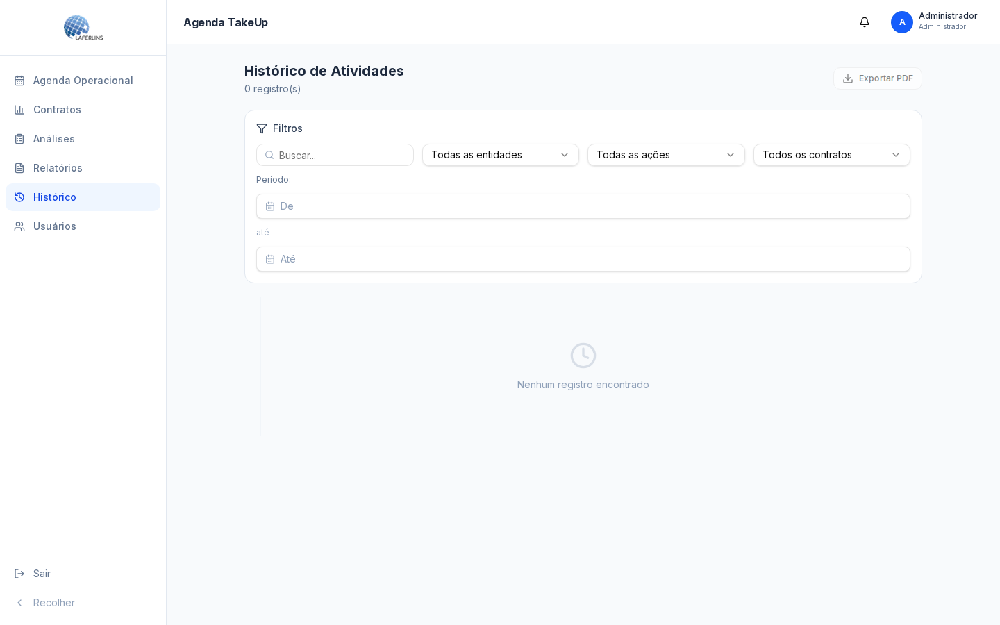
Disponível apenas para administradores. Lista todos os usuários com nome, e-mail, perfil e data de criação.
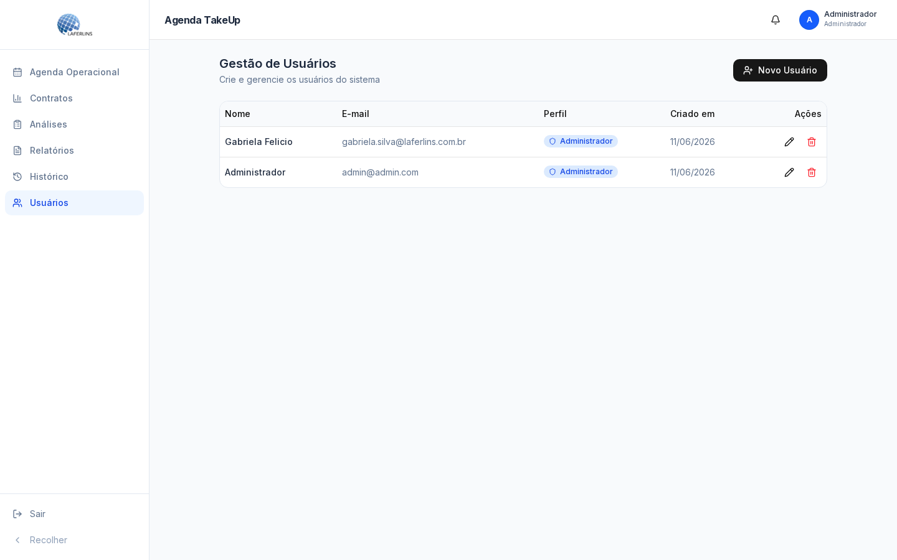
Clique em Novo Usuário e preencha:
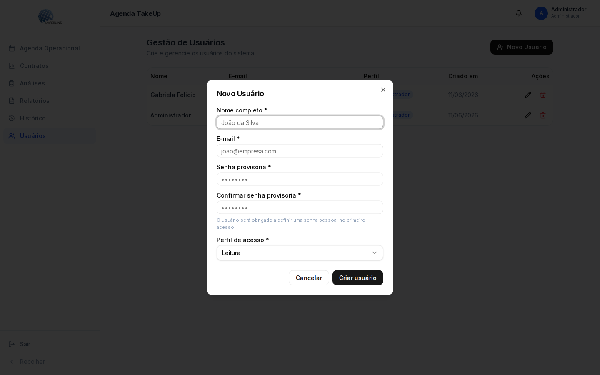
Solicite a um administrador que redefina sua senha na tela de Gestão de Usuários. Você receberá uma senha provisória e definirá uma nova no próximo acesso.
Sua senha ainda é provisória. Defina uma senha pessoal para liberar o acesso completo.
Esse módulo é exclusivo para o perfil Administrador.
Use o Builder em Relatórios e clique em Exportar Excel (.xlsx) ou Gerar Relatório (.docx).